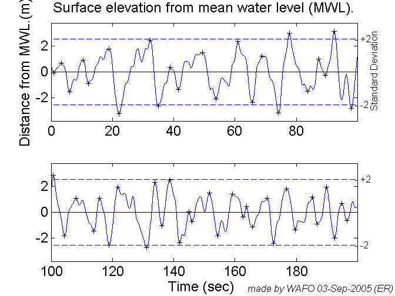
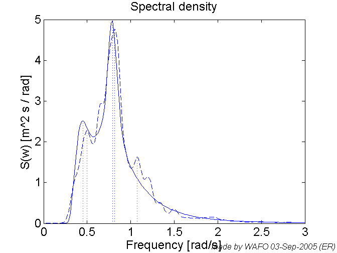
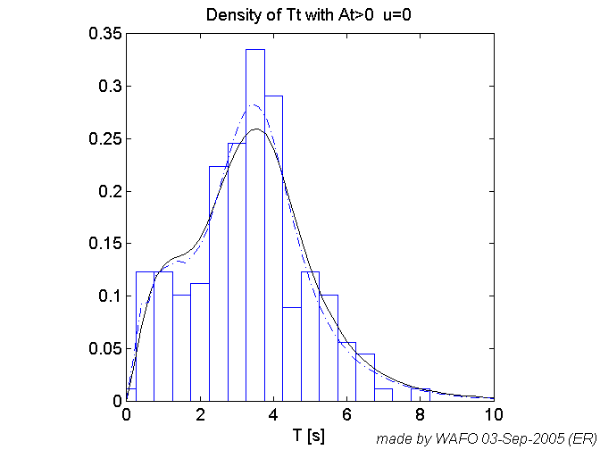
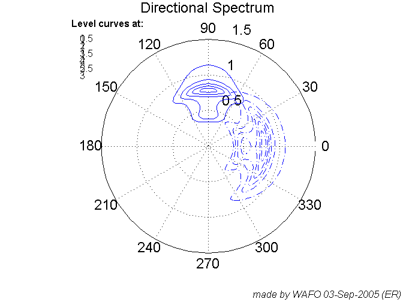
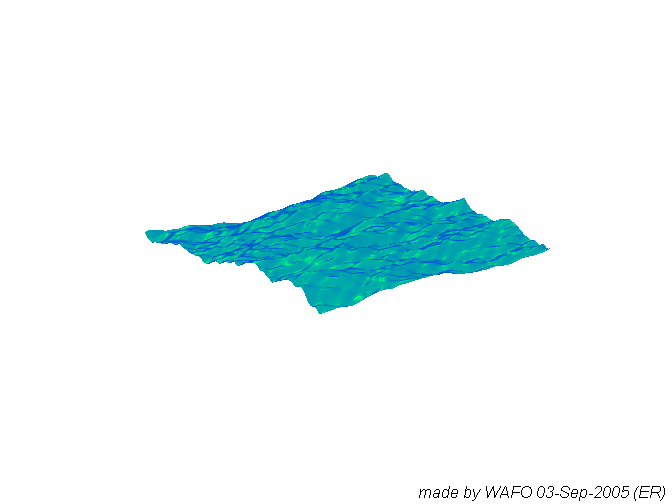
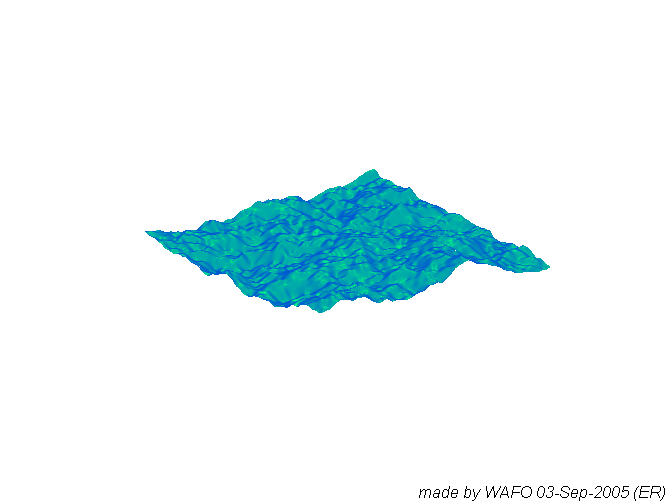
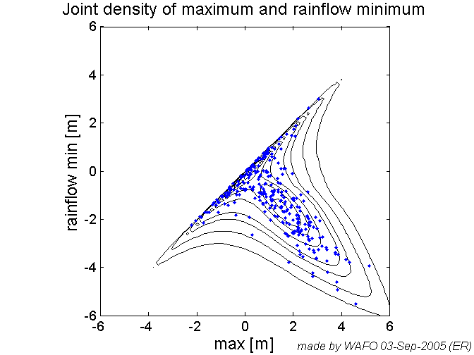

CHAPTER1 gives an overview through examples some of the capabilities of WAFO. WAFO is a toolbox of Matlab routines for statistical analysis and simulation of random waves and loads.
The commands are edited for fast computation. Each set of commands is followed by a 'pause' command. Type 'pause off' to disable them.
% Tested on Matlab 5.3, 7.0 % History % Revised pab sept2005 % Added sections -> easier to evaluate using cellmode evaluation. % Revised pab Dec 2004 % Added support for publish.m command in matlab R14 % Created by GL July 13, 2000 % from commands used in Chapter 1 of the tutorial pstate = 'off'
pstate = off
%The following code generates 200 seconds of data sampled with 10Hz from %the Torsethaugen spectrum Hm0 = 6; Tp = 8; S1=torsethaugen([],[Hm0 Tp],1); clf dt = 0.1; N = 2000; xs=spec2sdat(S1,N,dt); clf waveplot(xs,'-') wafostamp([],'(ER)') pause(pstate)
Spectrum for Wind dominated sea
%A common situation is that one wants to estimate the spectrum for wave %measurements. The following code simulate 20 minutes signal sampled at 4Hz %and compare the spectral estimate with the original Torsethaugen spectum. clf xs=spec2sdat(S1,[20*60*4 1],0.25); Sest = dat2spec(xs,400) wspecplot(Sest,1,'--'), hold on wspecplot(S1,1), hold off axis([0 3 0 5]) wafostamp([],'(ER)') pause(pstate)
Sest =
S: [2049x1 double]
w: [2049x1 double]
tr: []
h: Inf
type: 'freq'
phi: 0
norm: 0
note: 'dat2spec(xs), Method = cov'
date: '03-Sep-2005 04:01:23'
L: 400
Bw: 0.0836
 %WAFO gives the possibility of computing the exact probability %distributions for a number of characteristics given a spectral density. %In the following example we study the trough period extracted from the %time series and compared with the theoretical density computed with exact %spectrum, S1, and the estimated spectrum, Sest. clf [T, index] = dat2wa(xs,0,'d2u'); whisto(T,25,1,1), hold on dtyex = spec2tpdf(S1,[],'Tt',[0 10 51],0,3); dtyest = spec2tpdf(Sest,[],'Tt',[0 10 51],0,3); pdfplot(dtyex) pdfplot(dtyest,'-.') axis([0 10 0 0.35]), hold off wafostamp([],'(ER)') pause(pstate)
The level u for Gaussian process = 0 writing data Starting Fortran executable. Requested parameters : NIT = 3 integration by quadrature EPSS = 1.000000000000000E-05 RELEPS = 1.000000000000000E-05 EPS2 = 1.000000000000000E-04 xCutOff = 4.264890793922826 NsimMax = 5000 Elapsed time is 2.043000 seconds. The level u for Gaussian process = 0 writing data Starting Fortran executable. Requested parameters : NIT = 3 integration by quadrature EPSS = 1.000000000000000E-05 RELEPS = 1.000000000000000E-05 EPS2 = 1.000000000000000E-04 xCutOff = 4.264890793922826 NsimMax = 5000 Elapsed time is 2.353000 seconds.
%Here are a few lines of code, which produce directional spectra %with frequency independent and frequency dependent spreading. clf D1 = spreading(101,'cos',pi/2,[15],[],0); % frequency independent D12 = spreading(101,'cos',0,[15],S1.w,1); % frequency dependent SD1 = mkdspec(S1,D1); SD12 = mkdspec(S1,D12); wspecplot(SD1,1), hold on, wspecplot(SD12,1,'-.'); hold off wafostamp([],'(ER)') pause(pstate)
The simulations show that frequency dependent spreading leads to much more irregular surface so the orientation of waves is less transparent compared to the frequency independent case.
% Frequency independent spreading Y1=seasim(SD1,2^8,2^8,1,0.5,0.5,0.25,2,1); wafostamp([],'(ER)') pause(pstate)
Interpolating in spectrum
Frequency dependent spreading
Y12=seasim(SD12,2^8,2^8,1,0.5,0.5,0.25,2,1);
wafostamp([],'(ER)')
pause(pstate)
Interpolating in spectrum
Here the Markov approximation for computing the intensity of rainflowcycles for the Gaussian model with spectrum S1
clf frfc=spec2cmat(S1,[],'rfc',[],[-6 6 61]); pdfplot(frfc); hold on tp=dat2tp(xs); rfc=tp2rfc(tp); plot(rfc(:,2),rfc(:,1),'.') wafostamp([],'(ER)') hold off
The level u for Gaussian process = 0 Writing data. Starting Fortran executable. Laps to go: 40 Laps to go: 39 Laps to go: 38 Laps to go: 37 Laps to go: 36 Laps to go: 35 Laps to go: 34 Laps to go: 33 Laps to go: 32 Laps to go: 31 Laps to go: 30 Laps to go: 29 Laps to go: 28 Laps to go: 27 Laps to go: 26 Laps to go: 25 Laps to go: 24 Laps to go: 23 Laps to go: 22 Laps to go: 21 Laps to go: 20 Laps to go: 19 Laps to go: 18 Laps to go: 17 Laps to go: 16 Laps to go: 15 Laps to go: 14 Laps to go: 13 Laps to go: 12 Laps to go: 11 Laps to go: 10 Laps to go: 9 Laps to go: 8 Laps to go: 7 Laps to go: 6 Laps to go: 5 Laps to go: 4 Laps to go: 3 Laps to go: 2 Loading data. Warning: this is not a pdf since cdf>1 normalizing